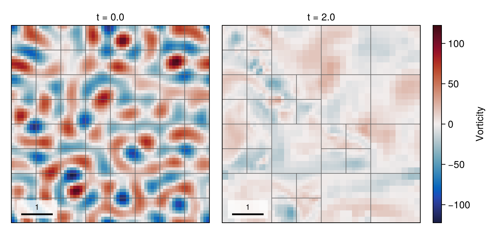
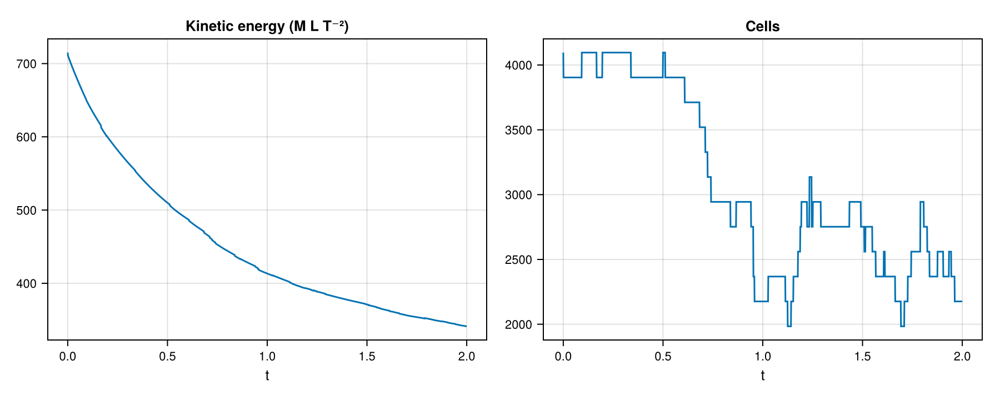
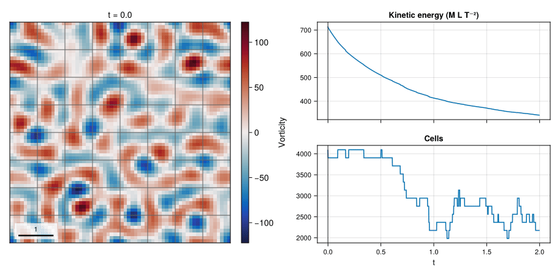

03 – Decaying turbulence
A seeded periodic velocity field decays while pressure-driven adaptation changes the block mesh.

At a glance
| Physics | Single phase on the periodic square [0, 2π]², density 1, reynolds=400 and dynamic viscosity 0.0025; initially random, band-limited solenoidal modes. The Reynolds parameter sets viscosity and is not a measured turbulent Reynolds number. |
| Algorithms | Initial velocity projection, Lax–Wendroff staggered advection, implicit-midpoint diffusion and pressure projection. Pressure uses CG/tree multigrid; diffusion uses tree multigrid and selects CG or BiCGSTAB by matrix symmetry. Pressure interpolation-error AMR uses refine/coarsen thresholds 0.6/0.2, update interval 5, coarsen delay 25 and minimum level min(2, max_level). Automatic stepping uses CFL 0.45. |
| Worth varying | reynolds=400 changes viscosity; max_level=4 changes the finest possible level; final_time=10 sets the duration; dt=nothing selects automatic steps. At max_level=2 the protected minimum equals the maximum, so no coarsening below level 2 is possible. |
| Validated against | Incompressibility has exact reference zero: the final volume-weighted :divergence_norm is 1.08446e-6 at docs size. :projected_kinetic_energy decreases from 715.044 to 341.261; no exact turbulent-flow trajectory is claimed. |
| Cost | Default: level 4, T=10, initially 16384 and finally 1024 cells, 18213 steps and 393 mesh updates; setup and simulation took 106.4 s on one thread. Docs: level 3, T=2, initially 4096 and finally 2176 cells, 1744 steps and 54 mesh updates; setup and simulation took 19.10 s and the whole figure script 39.27 s, including first-use compilation and rendering. |
The gallery measurement used Julia 1.12.7, one Julia thread and one BLAS thread; compilation depends on earlier examples and package loading is excluded.
Setup
A MersenneTwister(20250308) generates phases and normally distributed amplitudes for modes with 3 ≤ |k| ≤ 9, weighted toward |k|=6. The velocity initializer sums terms of the form
\[\boldsymbol{u}_k=A_k\sin(k_x x+k_y y+\phi_k)(-k_y,k_x), \qquad \nu=1/\mathrm{Re}.\]
The example projects this field before time stepping. All blocks start at the selected maximum level; the pressure criterion can subsequently refine or coarsen subject to the minimum level. See the method reference for momentum transport, projection and AMR criteria.
Run
From the repository root, reproduce the gallery's simulation settings headlessly:
using TwoPhaseAMR
include("examples/03_decaying_turbulence/decaying_turbulence.jl")
run = run_example(max_level = 3, final_time = 2.0)
cells = diagnostic_history(run.flow, :cells)The direct example records keyframes in run.recorder (accessible via snapshot_store(run.recorder)) using the larger example defaults. The figure command uses CairoMakie and the smaller gallery settings:
julia --project=examples examples/03_decaying_turbulence/decaying_turbulence.jl
julia --project=examples examples/03_decaying_turbulence/make_figures.jlAppend --studio to the example command to follow the run in a browser; press Ctrl+C to close Studio after the run.
Use make_figures(; outdir=..., size=:default) for the level-4, T=10 simulation. Both sizes print the simulation and diagnostic summary, including cell and regrid counts, and runtime.
Results
The hero compares the initial and final retained vorticity states, with leaf-block boundaries. Each panel uses its own symmetric color scale.

The projected energy falls from 715.044 to 341.261, while active cells fall from 4096 to 2176. The figure registers :projected_kinetic_energy after the initial projection.

The GIF samples 41 output frames on a uniform simulation-time grid over the two simulated time units, each showing the nearest retained keyframe (the completed step nearest its target time), with one symmetric vorticity range over all frames, next to the kinetic energy and active cell count with a cursor at the shown time.
Variations
After including the example, try:
run_example(max_level = 2, final_time = 2.0) # protected uniform minimum level
run_example(max_level = 3, final_time = 0.5) # shorter adaptive run
run_example(reynolds = 200, max_level = 3, final_time = 2.0) # stronger viscosityFiles
- decaying_turbulence.jl — seeded initial condition, AMR and recorded keyframes.
- make_figures.jl — headless keyframes, histories and animation.